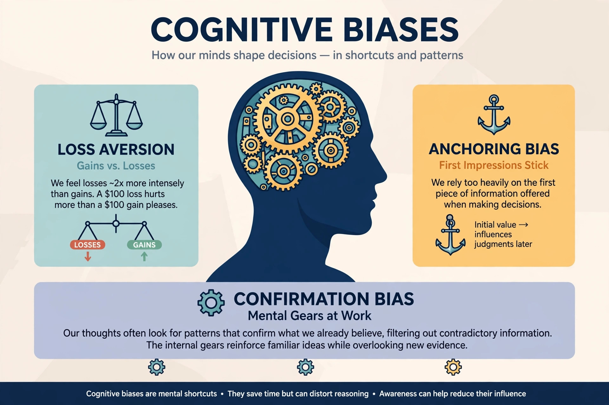

Behavioural economics
Behavioural economics (also spelled behavioral economics) studies the effects of psychological, cognitive, emotional, cultural and social factors on the economic decisions of individuals and institutions, and how those decisions differ from the predictions of classical economic theory. It combines methods from psychology and economics to understand how and why people sometimes make seemingly irrational or sub-optimal choices. Leading figures include Daniel Kahneman, Amos Tversky, Richard Thaler — awarded the 2017 Nobel Memorial Prize in Economic Sciences — and Robert Shiller.

History
Early political economists such as Adam Smith recognised psychological dimensions of economic behaviour, but the field crystallised in the 1970s with Kahneman and Tversky's research on heuristics and biases and their 1979 prospect theory, which describes how people evaluate gains and losses. Richard Thaler brought the insights into mainstream economics through work on mental accounting, self-control and fairness, and later applied them to public policy in the 2008 book Nudge, co-authored with Cass Sunstein.
Main concepts
Heuristics and biases
People rely on mental shortcuts that systematically bias judgement: anchoring on an initial number, judging likelihood by how easily examples come to mind (availability), and insisting on consistency with prior beliefs (confirmation bias). Prospect theory adds loss aversion — losses loom roughly twice as large as equivalent gains — and framing effects, where identical choices are decided differently depending on how they are presented.
Bounded rationality and choice architecture
Building on Herbert Simon's idea of bounded rationality, behavioural economics treats decisions as constrained by limited information, time and cognitive capacity. Because choices are sensitive to defaults, ordering and framing, designers of systems — from retirement savings enrolment to organ donation registries — act as "choice architects". Nudges steer behaviour without forbidding options, for example by making enrolment in a pension plan automatic while preserving the ability to opt out.
Applications and criticism
Behavioural insights inform behavioural finance, marketing, health policy and the design of tax and savings systems, and governments have established dedicated units such as the United Kingdom's Behavioural Insights Team. Critics caution that some reported effects replicate poorly, that nudging can slide into manipulation, and that the field's catalogue of biases lacks a single unifying theory.
See also: Information asymmetry · Prospect theory · Nudge theory · Cognitive bias